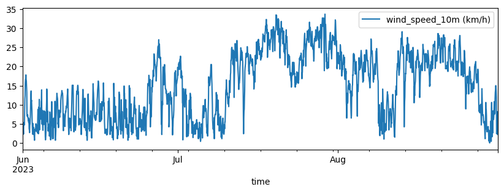
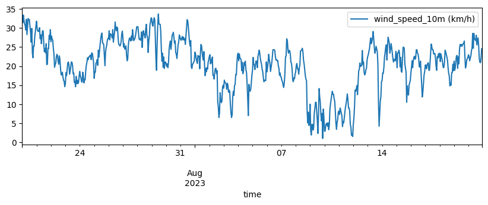

import marimo as mo
import pandas as pd
import numpy as np
import matplotlib.pyplot as plt
from statsmodels.tsa.statespace.sarimax import SARIMAX
from statsmodels.graphics.tsaplots import plot_acf, plot_pacf17 SARIMA — del modelo a un ejemplo con viento
Este notebook tiene dos partes:
- Teoría — qué es SARIMA, cómo se relaciona con AR, MA, ARMA e ARIMA, y qué significa cada uno de sus parámetros
(p, d, q)(P, D, Q, s). - Ejemplo — un ajuste interactivo sobre datos horarios de viento de La Ventosa (Oaxaca), con un widget para explorar combinaciones y diagnosticar el modelo.
17.1 SARIMA de un vistazo
Un modelo SARIMA(p, d, q)(P, D, Q)\(_s\) se construye a partir de cinco ideas, en orden creciente de complejidad. Todos los modelos de abajo son casos particulares del widget — los recuperas poniendo en cero los órdenes que no quieras usar.
| Modelo | Ajuste del widget | Qué captura |
|---|---|---|
| AR(p) | (p, 0, 0)(0, 0, 0, _) |
El valor actual depende de sus propios p rezagos pasados. |
| MA(q) | (0, 0, q)(0, 0, 0, _) |
El valor actual depende de los últimos q choques (errores). |
| ARMA(p, q) | (p, 0, q)(0, 0, 0, _) |
Combina ambas ideas — solo para series estacionarias. |
| ARIMA(p, d, q) | (p, d, q)(0, 0, 0, _) |
Diferencia d veces para quitar tendencia, luego ARMA. |
| SARIMA(p, d, q)(P, D, Q)\(_s\) | (p, d, q)(P, D, Q, s) |
ARIMA más una copia estacional del AR/I/MA en el rezago s. |
17.1.1 La parte no estacional (p, d, q)
- p — orden autorregresivo. Usa
y[t-1], y[t-2], …, y[t-p]. - d — número de diferencias regulares.
d=1modelay[t] - y[t-1]; esto elimina una tendencia lenta para que el resto del modelo vea una serie estacionaria. - q — orden de media móvil. Usa los errores pasados
ε[t-1], …, ε[t-q].
17.1.2 La parte estacional (P, D, Q, s)
Las mismas tres perillas, pero actuando en múltiplos del periodo estacional s — el modelo observa y[t-s], y[t-2s], … en lugar de y[t-1], y[t-2], ….
- s — el periodo del ciclo. Para datos horarios con patrón diario, fija
s = 24. Cada hora pronosticada queda anclada a la misma hora de días previos, que es justo lo que significa el “día promedio horario”: el modelo aprende su propio perfil diario, refinado por la parte no estacional(p, d, q)para la dinámica de corto plazo. - D — diferenciación estacional.
D=1modelay[t] - y[t-s]. Cons = 24esto resta “misma hora, día anterior” y quita el ciclo diario para que el modelo se concentre en lo que cambia día a día. - P — AR estacional: usa
y[t-s], y[t-2s], …, y[t-Ps]. - Q — MA estacional: usa errores pasados
ε[t-s], ε[t-2s], …, ε[t-Qs].
17.1.3 Cómo el widget recupera cada variante
Usa el formulario de abajo para alternar entre modelos sin reescribir código:
- AR(2) →
p=2, d=0, q=0, P=0, D=0, Q=0(s es irrelevante) - MA(1) →
p=0, d=0, q=1, P=0, D=0, Q=0 - ARMA(2, 1) →
p=2, d=0, q=1, P=0, D=0, Q=0 - ARIMA(2, 1, 1) →
p=2, d=1, q=1, P=0, D=0, Q=0 - SARIMA(2, 0, 1)(1, 1, 1)\(_{24}\) → los valores por defecto; estacionalidad diaria activa.
17.1.4 Consejos para esta serie
- Empieza con
s = 24yD = 1— el viento tiene un ciclo diurno fuerte, así que la diferencia estacional suele ser la perilla más útil. - Si la ACF de los residuos sigue sobresaliendo en el rezago 24, sube
PoQ(rara vez por encima de 2 cada uno) en lugar depoq. - Mantén
d + D ≤ 2en total. Sobre-diferenciar infla la varianza y produce un peor pronóstico aunque el AIC baje. - Compara corridas por AIC/BIC en entrenamiento y RMSE en el holdout — un modelo que sobreajusta luce bien en AIC pero peor en RMSE.
17.2 La parte estacional (P, D, Q, s) — a fondo
17.2.1 Una analogía: el marinero con dos relojes
Imagina que eres marinero en La Ventosa y quieres anticipar la velocidad del viento en la próxima hora. Tienes dos relojes en la cabina:
- Un reloj de pulso, que te dice qué ha pasado en los últimos minutos: "hace dos horas que el viento se viene calmando". Este reloj es la parte no estacional
(p, d, q): mira lo inmediato. - Un almanaque del día, que te dice en qué punto del ciclo diario estás: "son las 14:00, a esta hora todos los días aprieta la brisa por el calentamiento solar sobre el istmo". Este reloj es la parte estacional
(P, D, Q, s): mira el mismo instante de ciclos previos.
Un buen pronóstico combina ambos. SARIMA hace exactamente eso: multiplica dos modelos ARMA, uno que opera en rezagos consecutivos (1, 2, 3, …) y otro que opera en rezagos estacionales (s, 2s, 3s, …).
17.2.2 s — el periodo del ciclo
Es el intervalo del almanaque: cada cuántas observaciones se repite el patrón.
| Frecuencia de los datos | Ciclo que esperas | s |
|---|---|---|
| Horarios | Diario | 24 |
| Cada 30 min | Diario | 48 |
| Diarios | Semanal | 7 |
| Mensuales | Anual | 12 |
Pista: si la ACF de la serie cruda muestra picos regulares en el rezago k, prueba s = k.
17.2.3 D — la diferencia estacional (la perilla más poderosa)
D = 1 transforma la serie en y[t] - y[t-s]. En palabras:
"¿Cuánto difiere la observación de ahora respecto al mismo punto del ciclo anterior?"
Para viento horario con s = 24: "¿cuánto difiere el viento de hoy a las 14:00 del viento de ayer a las 14:00?". Esa resta elimina el perfil promedio diario y deja al modelo trabajando solo con las desviaciones día-a-día — que suelen ser mucho más estacionarias y fáciles de modelar.
Analogía: si quieres saber si hoy hace calor anormal, no miras la temperatura cruda — la comparas con el promedio histórico de esta misma fecha. D = 1 hace ese "restar respecto al ciclo previo" automáticamente, sin que tengas que calcular el promedio.
17.2.4 P — el AR estacional
Igual que p, pero saltando de un ciclo al siguiente. P = 1 dice:
"El viento de hoy a las 14:00 es proporcional al viento de ayer a las 14:00, más algo de ruido."
Con P = 2 mira ayer y antier a la misma hora.
Analogía: es la memoria larga del ritmo. Como un baterista que sabe que el platillo suena fuerte en cada cuarto compás — no porque acaba de sonar fuerte (eso sería p), sino porque cada vez que llega a esa posición del compás, suena fuerte.
17.2.5 Q — el MA estacional
Igual que q, pero sobre los errores del ciclo anterior. Q = 1 dice:
"Si ayer a las 14:00 me equivoqué por +3 km/h, hoy a las 14:00 arrastro algo de esa corrección."
Analogía: un meteorólogo que aprende del error del día anterior a la misma hora. "Ayer subestimé la tarde por 3 km/h — hoy ajusto al alza."
17.2.6 Por qué se multiplican las dos partes
SARIMA no es "ARMA + ARMA estacional" sumados, sino el producto de los polinomios no estacional y estacional. Esto hace aparecer rezagos cruzados sin gastar parámetros extra.
Ejemplo concreto: con p = 1, P = 1, s = 24, el modelo termina usando los rezagos 1, 24 y 25 simultáneamente — porque el rezago 25 es "hace una hora del valor de ayer a esta hora". Con solo dos coeficientes capturas dinámica de corto plazo y cíclica.
17.2.7 Cómo se ve en tus residuos
El veredicto rápido sobre (P, D, Q, s) no está en el AIC — está en la ACF de los residuos (el panel inferior izquierdo del fit).
- ¿Hay un pico aislado y grande en el rezago 24? Te falta
D = 1oQ = 1. - ¿Hay un decaimiento lento en los múltiplos de 24 (24, 48, 72)? Sube
Pa 1 o 2. - ¿Los rezagos
≤ 5siguen con picos? Eso es la parte no estacional — ajustapoq, noPniQ.
17.2.8 Aclaración: D = 1 no calcula un perfil promedio horario
Es una confusión común. SARIMA con D = 1, s = 24 no calcula un vector de 24 promedios (uno por hora del día sobre todo el entrenamiento). Lo que hace es una diferencia rezagada:
\[ y'[t] \;=\; y[t] - y[t-24] \]
Compara cada hora con esa misma hora del día anterior — uno solo, no el promedio de todos los días previos.
17.2.8.1 Entonces ¿de dónde sale el "perfil diario"?
Emerge implícitamente:
- Si el ciclo diario es estable,
y[t]yy[t-24]contienen aproximadamente la misma componente cíclica, y al restarlos se cancela. - En
y'[t]solo quedan las desviaciones día-a-día respecto al ciclo. - El modelo nunca guarda un vector de 24 promedios — ese sería un enfoque distinto (descomposición estacional clásica, tipo
seasonal_decomposeo STL).
17.2.8.2 Comparación rápida
| Enfoque | Cómo trata la estacionalidad |
|---|---|
STL / seasonal_decompose |
Calcula un perfil explícito (p. ej. promedio por hora del día sobre todo el train) y lo resta. |
SARIMA con D=1 |
Diferencia rezagada y[t] - y[t-s]. El perfil queda implícito. |
SARIMA con P, Q (sin D) |
Pondera explícitamente el valor (P) o el error (Q) del mismo instante de uno o dos ciclos anteriores — no de todo el histórico. |
17.2.8.3 Lo importante para tu intuición
Cuando decimos "el modelo aprende su propio perfil diario" nos referimos al comportamiento efectivo, no a la mecánica interna. Lo que opera es un rezago, no un promedio. Por eso D = 1 funciona bien aunque la serie de entrenamiento sea corta: no necesita muchas vueltas del ciclo para estimar un promedio robusto, solo necesita que el ciclo de ayer y el de hoy se parezcan.
17.2.9 ¿Y si D = 2 o D = 3? El triángulo de Pascal
Cada vez que aplicas la diferencia estacional, compones el operador consigo mismo. Si llamamos L al operador de rezago un paso (L · y[t] = y[t-1]), entonces la diferencia estacional es:
\[ \nabla_{s} \;=\; (1 - L^{s}) \]
y aplicarla D veces es elevarlo a la D:
\[ \nabla_{s}^{D} \;=\; (1 - L^{s})^{D} \;=\; \sum_{k=0}^{D} \binom{D}{k}(-1)^{k}\,L^{sk} \]
Esa es la fórmula binomial de toda la vida con a = 1, b = L^{s} — de ahí salen los coeficientes del triángulo de Pascal con signos alternados.
17.2.9.1 Cómo queda con s = 24
D |
Operación expandida | Observaciones que entran |
|---|---|---|
| 1 | y[t] - y[t-24] |
2 |
| 2 | y[t] - 2·y[t-24] + y[t-48] |
3 |
| 3 | y[t] - 3·y[t-24] + 3·y[t-48] - y[t-72] |
4 |
| 4 | y[t] - 4·y[t-24] + 6·y[t-48] - 4·y[t-72] + y[t-96] |
5 |
Los coeficientes son los renglones del triángulo:
D=1: 1 1
D=2: 1 2 1
D=3: 1 3 3 1
D=4: 1 4 6 4 1Solo que en SARIMA aparecen con signos alternados (+ - + - …) porque cada L^{s} arrastra un -1 desde el (1 - L^{s}) original.
17.2.9.2 Intuición combinatoria
Cada vez que aplicas (1 - L^{s}), cada observación o bien se queda donde está, o bien se rezaga s pasos. Después de D aplicaciones, una observación llega al instante t - sk por \(\binom{D}{k}\) caminos distintos — y eso es exactamente lo que cuenta el coeficiente binomial.
17.2.9.3 Qué interpretar de cada nivel
D = 1quita el nivel del ciclo: ¿cuánto cambió esta hora respecto a la misma hora de ayer?D = 2quita además una tendencia lineal sobre el ciclo: el ciclo diario sube o baja en pendiente constante día a día.D = 3quita una aceleración del ciclo (el ritmo de cambio del ciclo cambia). Esto ya es raro en la práctica.
17.2.9.4 Por qué D grande amplifica ruido
Mira la última columna de la tabla: cada incremento de D mete una observación más en la suma, y los coeficientes crecen (1, 2, 3, 4, 6, …). Estás combinando linealmente más valores, con pesos cada vez mayores y signos alternados — exactamente la receta para amplificar el ruido si el ciclo no varía con suficiente complejidad como para justificarlo.
Por eso la regla práctica es d + D ≤ 2.
17.3 Síntesis: la ecuación completa de SARIMA
Todo lo anterior se condensa en una sola expresión. Si llamamos L al operador de rezago (L · y[t] = y[t-1]) y separamos los cuatro polinomios — AR, AR estacional, MA, MA estacional — la ecuación de SARIMA es:
\[ \underbrace{\Phi_P(L^{s})}_{\text{AR estacional}}\, \underbrace{\phi_p(L)}_{\text{AR}}\, \underbrace{(1-L^{s})^{D}}_{\text{dif. estacional}}\, \underbrace{(1-L)^{d}}_{\text{dif. regular}}\, y[t] \;=\; \underbrace{\Theta_Q(L^{s})}_{\text{MA estacional}}\, \underbrace{\theta_q(L)}_{\text{MA}}\, \varepsilon[t] \]
Léelo de derecha a izquierda sobre y[t]:
- Primero diferencias regulares (
dveces, paso 1) — quitan tendencia. - Luego diferencias estacionales (
Dveces, pasos) — quitan el ciclo. - Sobre la serie ya estacionaria, aplicas AR no estacional y AR estacional simultáneamente.
- El lado derecho hace lo mismo con MA, pero sobre los errores
ε[t].
17.3.1 Los cuatro polinomios y sus rezagos
| Componente | Polinomio | Rezagos que usa |
|---|---|---|
AR no estacional p |
\(\phi_p(L) = 1 - \phi_1 L - \phi_2 L^2 - \dots - \phi_p L^p\) | 1, 2, …, p (consecutivos) |
AR estacional P |
\(\Phi_P(L^s) = 1 - \Phi_1 L^s - \Phi_2 L^{2s} - \dots - \Phi_P L^{Ps}\) | s, 2s, …, Ps (saltando) |
MA no estacional q |
\(\theta_q(L) = 1 + \theta_1 L + \dots + \theta_q L^q\) | 1, 2, …, q |
MA estacional Q |
\(\Theta_Q(L^s) = 1 + \Theta_1 L^s + \dots + \Theta_Q L^{Qs}\) | s, 2s, …, Qs |
(p, q) y (P, Q) son el mismo tipo de operador — AR y MA — pero actúan a escalas temporales distintas: la no estacional mira paso a paso, la estacional mira de un ciclo al siguiente.
17.3.2 Los polinomios se multiplican — y eso es la gracia
Cuando juntas \(\phi_p(L) \cdot \Phi_P(L^s)\) no solo aparecen los rezagos individuales, también aparecen rezagos cruzados gratis. Con p = 1, P = 1, s = 24:
\[ (1 - \phi_1 L)(1 - \Phi_1 L^{24}) = 1 - \phi_1 L - \Phi_1 L^{24} + \phi_1 \Phi_1 L^{25} \]
Aparece el rezago 25 con coeficiente \(\phi_1 \Phi_1\) — sin pagar parámetros extra. Y tiene sentido físico: "hace 25 horas" es "hace una hora del valor de ayer a esta hora". Esa es la razón por la que SARIMA logra capturar dinámicas en múltiples escalas con muy pocos coeficientes.
17.3.3 En una frase
SARIMA es ARMA aplicado dos veces a la vez — una en rezagos consecutivos
(p, q)y otra en rezagos del ciclo(P, Q)— sobre una serie a la que primero se le quitó la tendencia (d) y el ciclo (D,s).
18 Ejemplo: viento horario en La Ventosa
Carguemos los datos, definamos la serie de entrenamiento y ajustemos un SARIMA interactivamente.
f = "data/viento_la_ventosa_2023.csv"
viento_all = pd.read_csv(f, skiprows=3, parse_dates=["time"],index_col="time")
viento_all.plot(figsize=(10,3))
viento = viento_all.loc["2023-07-20":"2023-08-20"]
y = viento["wind_speed_10m (km/h)"].astype(float).asfreq("h")
viento.plot(figsize=(10, 3))
# Hold out the last 48 h as a test window for forecast evaluation.
horizon = 48
y_train = y.iloc[:-horizon]
y_test = y.iloc[-horizon:]
mo.md(f"Train: **{len(y_train)}** h ({y_train.index[0]} → {y_train.index[-1]}) \n"
f"Test: **{len(y_test)}** h ({y_test.index[0]} → {y_test.index[-1]})")Train: 720 h (2023-07-20 00:00:00 → 2023-08-18 23:00:00)
Test: 48 h (2023-08-19 00:00:00 → 2023-08-20 23:00:00)
order_form = (
mo.md(
"""
**Non-seasonal** p = {p}, d = {d}, q = {q}
**Seasonal** P = {P}, D = {D}, Q = {Q}, s = {s}
"""
)
.batch(
p=mo.ui.slider(0, 5, value=2, label="p"),
d=mo.ui.slider(0, 2, value=0, label="d"),
q=mo.ui.slider(0, 5, value=1, label="q"),
P=mo.ui.slider(0, 2, value=1, label="P"),
D=mo.ui.slider(0, 1, value=1, label="D"),
Q=mo.ui.slider(0, 2, value=1, label="Q"),
s=mo.ui.number(2, 168, value=24, label="s"),
)
.form(submit_button_label="Fit SARIMA")
)
order_form<marimo-form data-initial-value='null' data-label='null' data-element-id='"emfo-22"' data-loading='false' data-bordered='true' data-submit-button-label='"Fit SARIMA"' data-submit-button-disabled='false' data-clear-on-submit='false' data-show-clear-button='false' data-clear-button-label='"Clear"' data-should-validate='false'><marimo-ui-element object-id='emfo-22' random-id='87ad85b0-9ccf-c110-1ffe-7423a12d77bd'><marimo-dict data-initial-value='{"p":2,"d":0,"q":1,"P":1,"D":1,"Q":1,"s":24}' data-label='null' data-element-ids='{"emfo-15":"p","emfo-16":"d","emfo-17":"q","emfo-18":"P","emfo-19":"D","emfo-20":"Q","emfo-21":"s"}'><span class="markdown prose dark:prose-invert contents"><span class="paragraph"><strong>Non-seasonal</strong> p = <marimo-ui-element object-id='emfo-15' random-id='46fabfef-aa65-ff50-1cbd-448dd26c23b9'><marimo-slider data-initial-value='2' data-label='"<span class=\"markdown prose dark:prose-invert contents\"><span class=\"paragraph\">p</span></span>"' data-start='0' data-stop='5' data-steps='[]' data-debounce='false' data-disabled='false' data-orientation='"horizontal"' data-show-value='false' data-include-input='false' data-full-width='false'></marimo-slider></marimo-ui-element>, d = <marimo-ui-element object-id='emfo-16' random-id='a8702a38-c9c9-1b01-48fd-51a9c308581b'><marimo-slider data-initial-value='0' data-label='"<span class=\"markdown prose dark:prose-invert contents\"><span class=\"paragraph\">d</span></span>"' data-start='0' data-stop='2' data-steps='[]' data-debounce='false' data-disabled='false' data-orientation='"horizontal"' data-show-value='false' data-include-input='false' data-full-width='false'></marimo-slider></marimo-ui-element>, q = <marimo-ui-element object-id='emfo-17' random-id='48a6ccaa-a889-cadd-fc8c-5af3114a2855'><marimo-slider data-initial-value='1' data-label='"<span class=\"markdown prose dark:prose-invert contents\"><span class=\"paragraph\">q</span></span>"' data-start='0' data-stop='5' data-steps='[]' data-debounce='false' data-disabled='false' data-orientation='"horizontal"' data-show-value='false' data-include-input='false' data-full-width='false'></marimo-slider></marimo-ui-element></span> <span class="paragraph"><strong>Seasonal</strong> P = <marimo-ui-element object-id='emfo-18' random-id='130834c5-6fb8-c3e7-0c8d-a5faace1e49f'><marimo-slider data-initial-value='1' data-label='"<span class=\"markdown prose dark:prose-invert contents\"><span class=\"paragraph\">P</span></span>"' data-start='0' data-stop='2' data-steps='[]' data-debounce='false' data-disabled='false' data-orientation='"horizontal"' data-show-value='false' data-include-input='false' data-full-width='false'></marimo-slider></marimo-ui-element>, D = <marimo-ui-element object-id='emfo-19' random-id='ef248a5b-b08f-ff77-38ff-457ed75309b8'><marimo-slider data-initial-value='1' data-label='"<span class=\"markdown prose dark:prose-invert contents\"><span class=\"paragraph\">D</span></span>"' data-start='0' data-stop='1' data-steps='[]' data-debounce='false' data-disabled='false' data-orientation='"horizontal"' data-show-value='false' data-include-input='false' data-full-width='false'></marimo-slider></marimo-ui-element>, Q = <marimo-ui-element object-id='emfo-20' random-id='a6feb7e2-c5f3-76ec-81ae-8d1039911d47'><marimo-slider data-initial-value='1' data-label='"<span class=\"markdown prose dark:prose-invert contents\"><span class=\"paragraph\">Q</span></span>"' data-start='0' data-stop='2' data-steps='[]' data-debounce='false' data-disabled='false' data-orientation='"horizontal"' data-show-value='false' data-include-input='false' data-full-width='false'></marimo-slider></marimo-ui-element>, s = <marimo-ui-element object-id='emfo-21' random-id='162721a8-3941-5de5-ce8c-a99d77ab1985'><marimo-number data-initial-value='24' data-label='"<span class=\"markdown prose dark:prose-invert contents\"><span class=\"paragraph\">s</span></span>"' data-start='2' data-stop='168' data-debounce='false' data-full-width='false' data-disabled='false'></marimo-number></marimo-ui-element></span></span></marimo-dict></marimo-ui-element></marimo-form>
cfg = order_form.value
mo.stop(cfg is None, mo.md("Pick orders above and click **Fit SARIMA**."))
order = (cfg["p"], cfg["d"], cfg["q"])
seasonal_order = (cfg["P"], cfg["D"], cfg["Q"], cfg["s"])
with mo.status.spinner("Fitting SARIMA..."):
res = SARIMAX(
y_train,
order=order,
seasonal_order=seasonal_order,
enforce_stationarity=False,
enforce_invertibility=False,
).fit(disp=False)
fc = res.get_forecast(steps=len(y_test))
y_hat = fc.predicted_mean
ci = fc.conf_int(alpha=0.05)
burn = max(seasonal_order[3], 24)
resid = res.resid.iloc[burn:]
fig, axes = plt.subplots(2, 2, figsize=(12, 7))
ax = axes[0, 0]
y_train.iloc[-7 * 24:].plot(ax=ax, label="train (last 7 d)")
y_test.plot(ax=ax, label="test", color="black")
y_hat.plot(ax=ax, label="forecast", color="red")
ax.fill_between(ci.index, ci.iloc[:, 0], ci.iloc[:, 1], color="red", alpha=0.15)
ax.legend(loc="upper left", fontsize=8)
ax.set_title("Forecast vs holdout")
ax = axes[0, 1]
resid.plot(ax=ax)
ax.set_title("Residuals (after burn-in)")
ax.axhline(0, color="k", lw=0.5)
plot_acf(resid, ax=axes[1, 0], lags=48)
plot_pacf(resid, ax=axes[1, 1], lags=48, method="ywm")
plt.tight_layout()
rmse = float(np.sqrt(((y_test - y_hat) ** 2).mean()))
mae = float((y_test - y_hat).abs().mean())
mo.vstack([
mo.md(
f"**SARIMA{order} x {seasonal_order}** · "
f"AIC = `{res.aic:.2f}` · BIC = `{res.bic:.2f}` · "
f"RMSE(test) = `{rmse:.2f}` · MAE(test) = `{mae:.2f}`"
),
fig,
mo.accordion({"Full summary": mo.md(f"```\n{res.summary().as_text()}\n```")}),
])Pick orders above and click Fit SARIMA.
18.1 Anatomía del código del fit + pronóstico
Esta sección documenta paso a paso el código de la celda de ajuste, para que puedas adaptarlo o explicarlo. Es solo lectura — el código vivo está en la celda de arriba.
18.1.1 1. Leer la configuración del widget y validar
cfg = order_form.value
mo.stop(cfg is None, mo.md("Pick orders above and click **Fit SARIMA**."))
order = (cfg["p"], cfg["d"], cfg["q"])
seasonal_order = (cfg["P"], cfg["D"], cfg["Q"], cfg["s"])order_form.valueesNonehasta que pulsas Fit SARIMA — así evitas reajustar mientras mueves sliders.mo.stop(...)corta la celda con un mensaje amigable si todavía no hay valores.- Se separan las dos tuplas que
statsmodelsespera: la no estacional(p, d, q)y la estacional(P, D, Q, s).
18.1.2 2. Ajustar el modelo
with mo.status.spinner("Fitting SARIMA..."):
res = SARIMAX(
y_train,
order=order,
seasonal_order=seasonal_order,
enforce_stationarity=False,
enforce_invertibility=False,
).fit(disp=False)SARIMAX(destatsmodels.tsa.statespace) es la implementación en espacio de estados del modelo SARIMA, más estable que la versión clásica.enforce_stationarity=Falseyenforce_invertibility=Falsepermiten que el optimizador explore raíces cerca del círculo unitario sin abortar. Útil para series con seasonalidades fuertes; el costo es que tienes que vigilar tú mismo si las raíces resultan explosivas.disp=Falsesilencia el log del optimizador (BFGS por defecto).- El
with mo.status.spinner(...)muestra un indicador de progreso en la UI mientras dura el fit.
18.1.3 3. Pronóstico sobre el holdout
fc = res.get_forecast(steps=len(y_test))
y_hat = fc.predicted_mean
ci = fc.conf_int(alpha=0.05)get_forecast(steps=h)pronostica los próximoshpasos fuera de muestra (a partir del final dey_train).predicted_meanes la mejor estimación puntual.conf_int(alpha=0.05)devuelve un DataFrame con las cotas inferior y superior del intervalo de confianza al 95% (alphaes la probabilidad de error fuera del intervalo).
18.1.4 4. Limpiar los residuos antes de diagnosticar
burn = max(seasonal_order[3], 24)
resid = res.resid.iloc[burn:]- El filtro de Kalman necesita unos pasos para "entrar en régimen"; las primeras observaciones tienen residuos enormes que ensucian la ACF y los gráficos.
- Quitar
spuntos iniciales (al menos 24) es suficiente para que el diagnóstico refleje el comportamiento real del modelo.
18.1.5 5. Panel de diagnóstico 2×2
fig, axes = plt.subplots(2, 2, figsize=(12, 7))
# (0,0) Forecast vs holdout
y_train.iloc[-7*24:].plot(ax=axes[0,0], label="train (last 7 d)")
y_test.plot(ax=axes[0,0], label="test", color="black")
y_hat.plot(ax=axes[0,0], label="forecast", color="red")
axes[0,0].fill_between(ci.index, ci.iloc[:,0], ci.iloc[:,1],
color="red", alpha=0.15)
# (0,1) Residuos
resid.plot(ax=axes[0,1])
# (1,0) y (1,1) ACF y PACF de residuos
plot_acf(resid, ax=axes[1,0], lags=48)
plot_pacf(resid, ax=axes[1,1], lags=48, method="ywm")
plt.tight_layout()Cómo leer cada panel:
| Panel | Qué buscar |
|---|---|
| (0,0) Forecast vs holdout | La línea roja debe seguir el patrón diario de la negra; la banda rosa debe contener la mayoría de los puntos. |
| (0,1) Residuos | Deben oscilar alrededor de 0 sin patrones visibles (sin tendencia, sin ciclos). |
| (1,0) ACF residuos | Casi todas las barras dentro de la banda azul. Picos en lag 24, 48 → falta seasonal MA (Q) o más D. |
| (1,1) PACF residuos | Lo mismo, pero diagnostica AR. Picos persistentes en lag 24 → necesitas más P. |
18.1.6 6. Métricas e impresión final
rmse = float(np.sqrt(((y_test - y_hat)**2).mean()))
mae = float((y_test - y_hat).abs().mean())
mo.vstack([
mo.md(f"**SARIMA{order} x {seasonal_order}** · "
f"AIC = `{res.aic:.2f}` · BIC = `{res.bic:.2f}` · "
f"RMSE(test) = `{rmse:.2f}` · MAE(test) = `{mae:.2f}`"),
fig,
mo.accordion({"Full summary": mo.md(f"```\n{res.summary().as_text()}\n```")}),
])AIC/BICmiden bondad de ajuste penalizada por número de parámetros, calculados sobrey_train. Sirven para comparar modelos en muestra.RMSE/MAEse calculan sobrey_test— son el veredicto fuera de muestra. Un modelo con AIC bajo pero RMSE alto está sobreajustando.mo.vstack([...])apila resumen, figura yaccordioncolapsable con elsummary()completo destatsmodels.
18.1.7 Flujo de trabajo recomendado
- Empieza simple:
(1, 0, 0)(0, 1, 0, 24)— soloD = 1con un AR no estacional. - Mira la ACF de residuos. ¿Pico grande en lag 24? Sube
Qa 1. ¿Picos en lag 1–5? Subeqa 1. - Compara AIC entre variantes — debe bajar al añadir parámetros útiles.
- Confirma siempre con el RMSE en el holdout. Si AIC baja pero RMSE no, descarta esa variante.
- Cuando la ACF de residuos esté "limpia" (casi todas las barras dentro de la banda azul), terminaste.